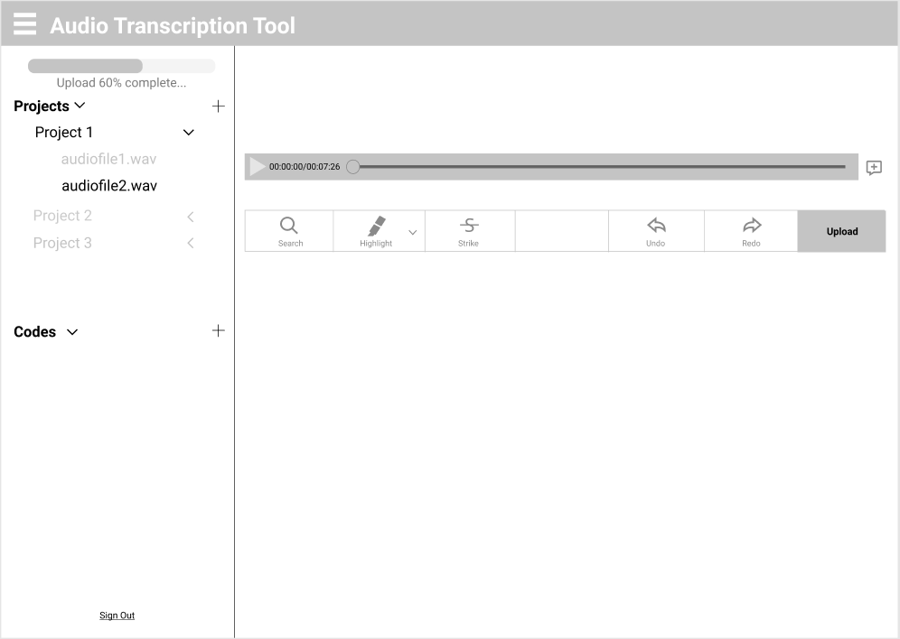
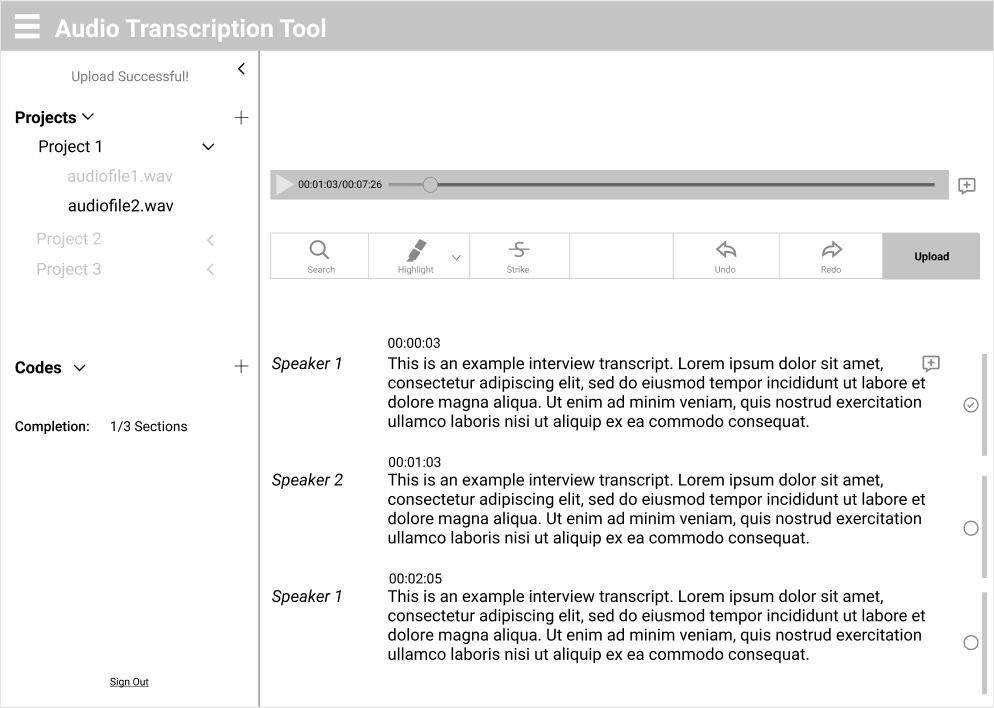
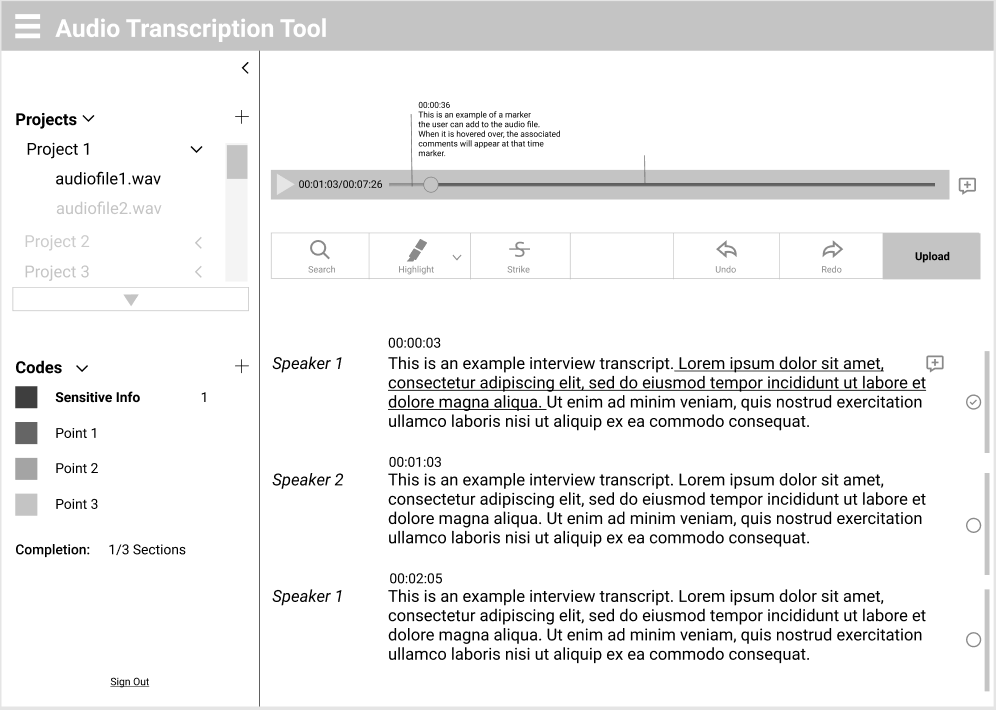
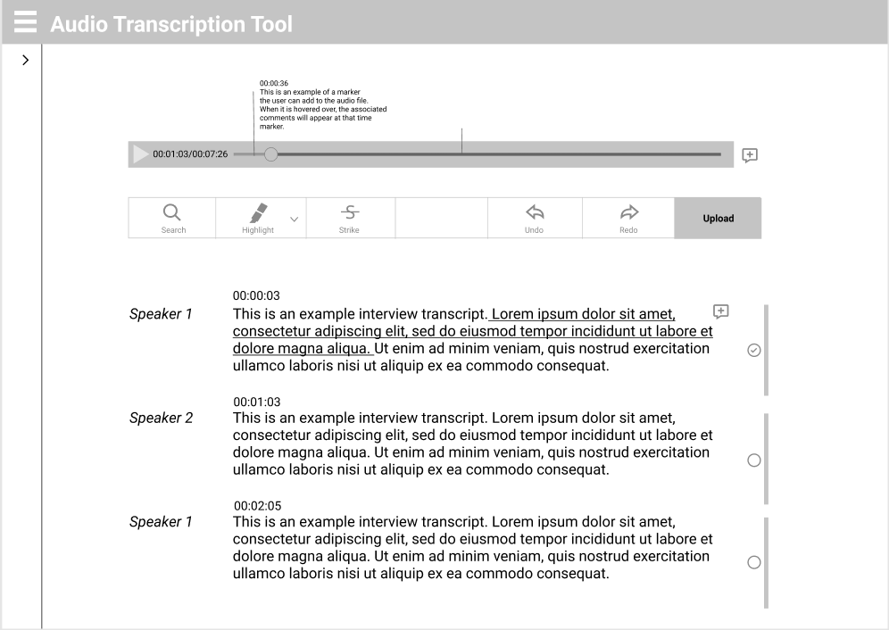
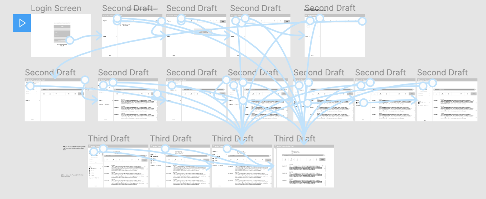
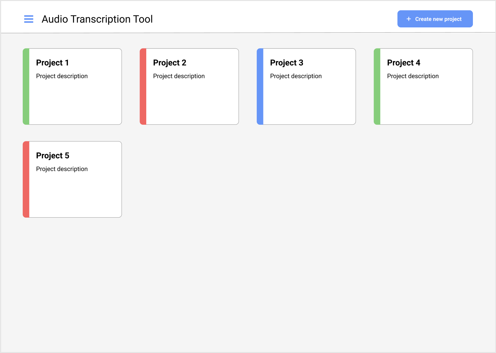
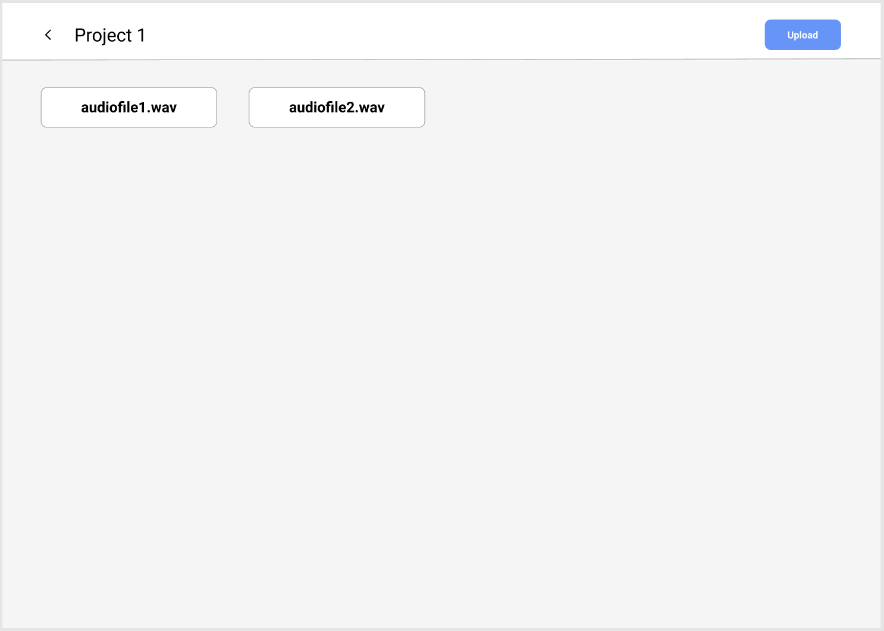
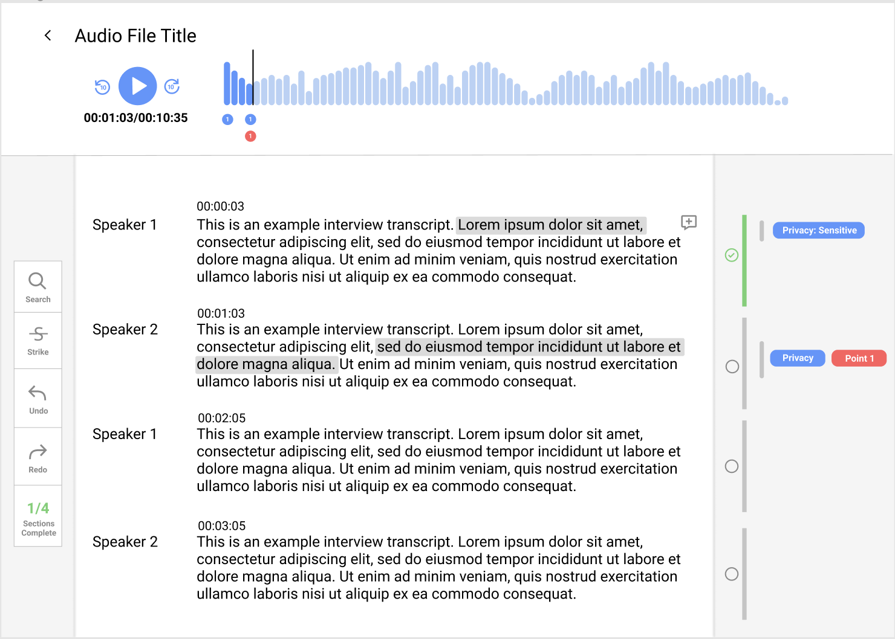

This project is still a work in progress, aimed for completion by June 2020.
There are many different tools currently available that transcribe audio files and others that provide a platform to analyze these transcriptions, but none that streamline both tasks and are offered free of cost. Thus, myself and a team of 5 others have been working with SAP to fill this gap in the market.
For this project, I mainly focused on
UI/UX design, starting by conducting in-person interviews with 5 graduate/PhD students (our target audience) in order to find their current pain points in
using transcription tools. Concurrently, I also completed a competitor analysis of popular audio transcription and analysis tools. Through this research,
I was able to figure out what main features users came to expect in these tools and how to improve upon tools already available for use.
Next, I created low-fidelity mockups utilizing Figma, shown below.
 
 
After adding connections between each screen of the low-fidelity prototype on Figma, I conducted usability tests utilizing "maze.design", a user testing platform.

Based on the usability tests, it was evident that a cleaner workspace was desired as well as a more intuitive way to add labels to the transcript. Thus, these changes were implemented in the creation of the high fidelity prototype.
 

This version moves the project directory space to separate pagesin order to avoid overcrowding the transcription editing page. Key features in the application include: